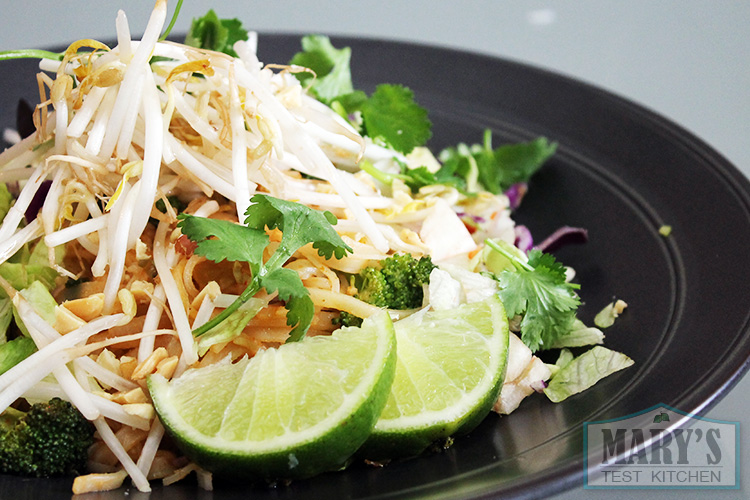

Vegetable Pad Thai

Description
This is a delicious dish of rice noodles, topped with vegetables and an amazing sauce.
Ingredients
- Sauce
- 1/4 cup lime juice
- 1/4 cup of soy sauce
- 3 tablespoons water
- 3 tablespoons brown sugar
- 3 tablespoons tomato paste
- 3 tablespoons rice vinegar
- Noodles
- 14 ounces rice noodles
- 1 medium crown of broccoli
- 1/2 cup sliced shallots
- 4 cloves garlic, minced
- 1 cup sliced green onions
- 1/4 cup roughly chopped cilantro
- 2 teaspoons neutral-tasting oil (i.e. grapeseed)
- Toppings
- 2 cups thinly sliced cabbage
- 1 carrot, thinkly sliced into matchsticks
- 1 cup bean sprouts
- Chopped peanuts
- Lime wedges
Steps
- Mix together ingredients for the sauce in a medium glass
- Cook noodles according to package directions. Rinse with cold water
- Chop broccoli into pieces no bigger than a quarter, and gather the rest of the veggies and herbs
- Heat the oil over medium heat in a big skillet or wok
- When pan is hot, add the shallots and stir fry for about 2 min, until they start to char around the edges
- Add broccoli and continue to stir fry for another 2 minutes
- Add garlic, and fry for another 30 seconds
- Gently add noodles and 1/3 cup of the sauce and toss to make sure everything is covered
- Cook for another 30 seconds to minute, make sure sauce is absorbed. Keep adding sauce 1 tablespoon at a time until it is exactly how you like it
- Turn off heat, fold in green onions and cilantro
- Serve this piled high next to cabbage, carrots, bean sprouts, lime wedges to squeeze and topped with peanuts.